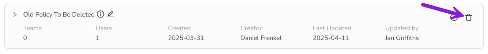

After you have set up your access control policies and statements, you can maintain them to ensure they are working as intended. You can:
Edit policies to change their name or description.
Delete policies that are no longer in use.
Change the users that are linked to a policy, as users enter or leave your organization, or change roles.
Edit the statements in a policy (or adding new statements), to reflect operational changes.
Delete statements from a policy when they are no longer needed.
Edit access control policies
You can edit any existing access control policy to change its name or description text.
Edit the details of an access control policy
In the Activities section, click Settings:
In the Activity Configuration menu, click Access Control > Policies.
On the Policies page, find the policy you want to edit. Click Edit by the policy's name. The Edit name & description dialog opens.
In the Edit name & description dialog, use the Name and Description fields to make changes as necessary.
The Description field is optional, but you must enter a name into the Name field.
Click Save to save your changes.
The Edit name & description dialog closes and the Policies page is displayed, where your changes are displayed on the modified policy.
Delete access control policies
If an entire access control policy is no longer needed, you can delete it at any time.
You can delete policies even if they still contain statements and are linked to users/teams. When you delete a policy that is still in use, the linked users immediately lose the permissions defined by the policy's statements.
Delete an access control policy
In the Activities section, click Settings:
In the Activity Configuration menu, click Access Control > Policies.
On the Policies page, find the policy you want to delete. On the policy, click Delete Policy: 
In the confirmation dialog, click Yes to confirm and delete the selected policy.
The confirmation dialog closes, and the Policies page is displayed, where the deleted policy is immediately removed from the list. The deleted policy's statements are no longer applied to the previously linked users with immediate effect.
Change which users are linked to an access control policy
If a policy's permissions scope should no longer be applied to a user or team, you can unlink them from the policy at any time.
Unlink users or teams from an existing policy
In the Activities section, click Settings:
In the Activity Configuration menu, click Access Control > Policies.
On the Policies page, find the policy from which you want to unlink users or teams. On the policy, click the Expand button to view its details.
In the expanded view of the policy, click Link users/teams. The Link Users/Teams dialog opens.
Remove the users you want to unlink from the policy:
To unlink all users on a team: Click Remove on the team's entry to deselect it from the Select one or more teams field.
To unlink individual users: Click Remove on the user's entry to deselect it from the Select one or more users field.
Click Link Users to finish unlinking the deselected users/teams from the policy.
The Link Users/Teams dialog closes and the Policies page is displayed, where the unlinked users or teams are no longer listed in the expanded view of the policy. Your changes will take effect for the affected users immediately.
Edit statements in an access control policy
You can make changes to any existing statement within a policy, including statements that are currently in use (for example, statements in a policy that has linked users/teams). For any existing statement, you can change the effect, resource, or action, as well as add or remove conditions.
Edit an existing statement
In the Activities section, click Settings:
In the Activity Configuration menu, click Access Control > Policies.
On the Policies page, find the policy that contains the statement you want to edit. On the policy, click the Expand button to view its statements.
In the expanded view of the policy, find the statement you want to edit in the table. On the statement's table row, click Edit statement. The Create Statement dialog opens, with the Statement Editor tab displayed.
Make changes to the statement as needed.
Click Save to save your changes.
The Create Statement dialog closes and the Policies page is displayed, where your changes are displayed in the expanded view of the applicable policy. Your changes will take effect for linked users/teams immediately.
Delete statements from an access control policy
If a specific statement within an access control policy is no longer needed, you can delete it at any time. You can delete statements even if their containing policy is still active (currently linked to active users/teams): when you delete a statement that is still in effect, the linked users immediately lose the permissions defined by the deleted statement.
Delete a statement from an access control policy
In the Activities section, click Settings:
In the Activity Configuration menu, click Access Control > Policies.
On the Policies page, find the policy that contains the statement you want to delete. On the policy, click the Expand button to view its statements.
In the expanded view of the policy, find the statement you want to delete in the table. On the statement's table row, click Delete statement.
In the confirmation dialog, click Delete to confirm and delete the selected statement.
The confirmation dialog closes, and the Policies page is displayed, where the deleted statement is no longer listed in the expanded view of the policy. The deleted statement is no longer applied to the previously linked users with immediate effect.
 Settings:
Settings: Edit by the policy's name. The Edit name & description dialog opens.
Edit by the policy's name. The Edit name & description dialog opens. Delete Policy:
Delete Policy: {kind=link}
 Expand button to view its details.
Expand button to view its details. Remove on the team's entry to deselect it from the Select one or more teams field.
Remove on the team's entry to deselect it from the Select one or more teams field. Delete statement.
Delete statement.